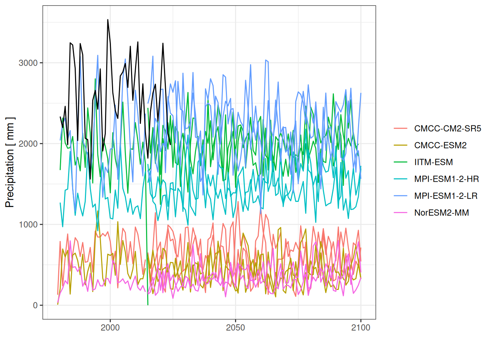
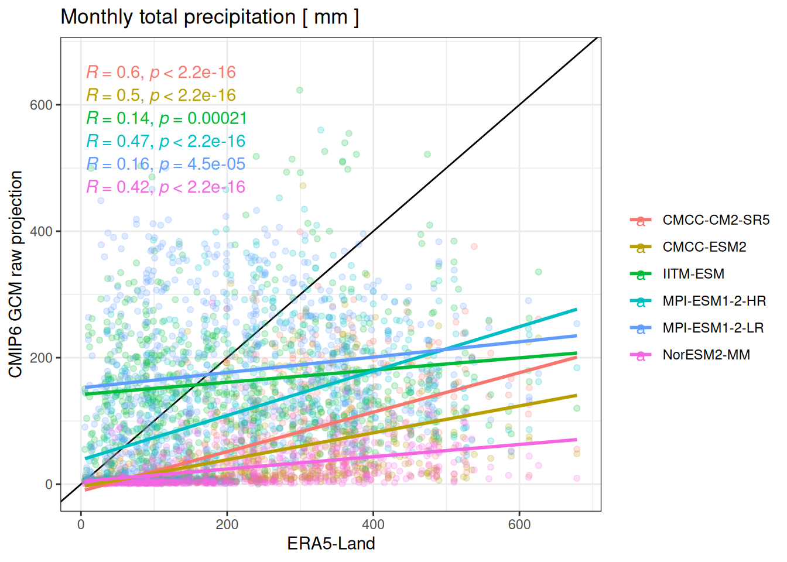
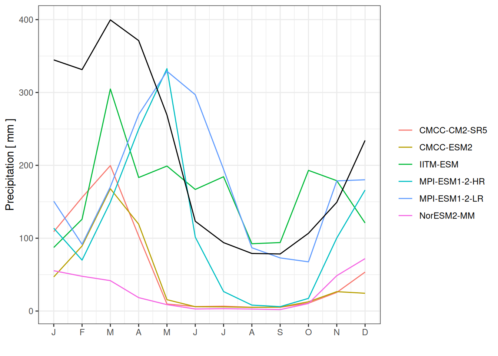
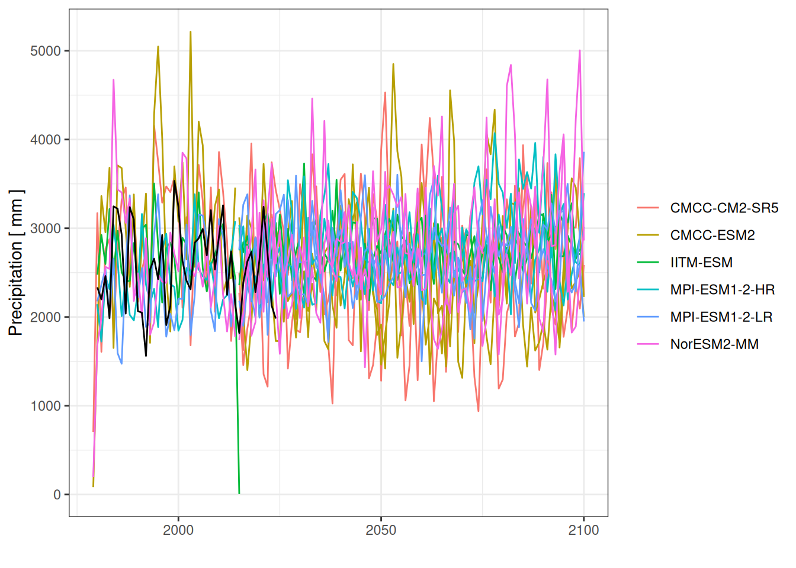

Summary. Future climate forcing from CMIP6 GCM between 1980 and 2100 under low emission scenarii SSP1-2.6 and high emission scenarii SSP5-8.5 (O’Neill et al. 2016). Daily values were statistically downscaled on ERA5-Land historical data per month using cumulative distribution function transformation CDFt (Vrac 2015). Half-hourly values were downscaled using daily mean variations across years from ERA5-Land.
CMIP6 raw precipitation projections mostly underestimated annual precipitation with lower monthly values and unrealistic seasonal pattern showing lagged and more intense dry seasons for all GCMs. After bias-correction we obtained more realistic annual precipitation, good monthly precipitation correlations to ERA5-Land above 0.6 and a realistic seasonality with the June to November dry season below 100-mm. Bias-correction using cumulative distribution function was applied on absolute precipitation value but might be improved considering relative daily precipitation volume in the month.
Code
era <-read_tsv("data/derived_data/climate.tsv") %>%group_by(date =as_date(floor_date(date, "year"))) %>%summarise(pr =sum(pr, na.rm =TRUE)) %>%mutate(gcm ="ERA5-Land", experiment ="historical")read_tsv("data/derived_data/projections_raw.tsv") %>%group_by(gcm, experiment, date =floor_date(date, "year")) %>%summarise(pr =sum(pr, na.rm =TRUE)) %>%ggplot(aes(date, pr, group =paste(gcm, experiment), col = gcm)) +geom_line() +geom_line(data = era, col ="black") +theme_bw() +xlab("") +ylab("Precipitation [ mm ]") +scale_color_discrete("")

Annual CMIP6 raw precipitation projections for scenarii SSP1-2.6 and SSP5-8.5 compared to ERA5-Land reanalysis (black).
Code
era <-read_tsv("data/derived_data/climate.tsv") %>%group_by(date =as_date(floor_date(date, "month"))) %>%summarise(era =sum(pr, na.rm =TRUE))read_tsv("data/derived_data/projections_raw.tsv") %>%group_by(gcm, experiment, date =floor_date(date, "month")) %>%summarise(pr =sum(pr, na.rm =TRUE)) %>%left_join(era) %>%ggplot(aes(era, pr, col = gcm)) +geom_abline() +geom_point(alpha = .2) +geom_smooth(method ="lm", se =FALSE) +theme_bw() + ggpubr::stat_cor() +scale_color_discrete("") +ggtitle("Monthly total precipitation [ mm ]") +xlab("ERA5-Land") +ylab("CMIP6 GCM raw projection")

Evaluations of CMIP6 raw projections monthly precipitations against ERA5-Land.
Code
era <-read_tsv("data/derived_data/climate.tsv") %>%group_by(date =as_date(floor_date(date, "month"))) %>%summarise(pr =sum(pr, na.rm =TRUE)) %>%mutate(gcm ="ERA5-Land") %>%group_by(gcm, date =month(date)) %>%summarise(pr =mean(pr))read_tsv("data/derived_data/projections_raw.tsv") %>%filter(experiment =="historical") %>%group_by(gcm, date =floor_date(date, "month")) %>%summarise(pr =sum(pr, na.rm =TRUE)) %>%group_by(gcm, date =month(date)) %>%summarise(pr =mean(pr)) %>%ggplot(aes(date, pr, col = gcm)) +geom_line() +geom_line(data = era, col ="black") +theme_bw() +xlab("") +ylab("Precipitation [ mm ]") +scale_color_discrete("") +scale_x_continuous(breaks =1:12,labels =c("J", "F", "M", "A", "M", "J", "J", "A","S", "O", "N", "D"))

Seasonal CMIP6 raw precipitation projections for scenarii SSP1-2.6 and SSP5-8.5 compared to ERA5-Land reanalysis (black).
Code
era <-read_tsv("data/derived_data/climate.tsv") %>%group_by(date =as_date(floor_date(date, "year"))) %>%summarise(pr =sum(pr, na.rm =TRUE)) %>%mutate(gcm ="ERA5-Land", experiment ="historical")read_tsv("data/derived_data/projections.tsv") %>%group_by(gcm, experiment, date =floor_date(date, "year")) %>%summarise(pr =sum(pr)) %>%ggplot(aes(date, pr, group =paste(gcm, experiment), col = gcm)) +geom_line() +geom_line(data = era, col ="black") +theme_bw() +xlab("") +ylab("Precipitation [ mm ]") +scale_color_discrete("") +theme(legend.key.size =unit(.8, "line"))

Annual CMIP6 bias-corrected precipitation projections for scenarii SSP1-2.6 and SSP5-8.5 compared to ERA5-Land reanalysis (black).
Code
era <-read_tsv("data/derived_data/climate.tsv") %>%group_by(date =as_date(floor_date(date, "month"))) %>%summarise(era =sum(pr, na.rm =TRUE))read_tsv("data/derived_data/projections.tsv") %>%group_by(gcm, experiment, date =floor_date(date, "month")) %>%summarise(pr =sum(pr)) %>%left_join(era) %>%ggplot(aes(era, pr, col = gcm)) +geom_abline() +geom_point(alpha = .2) +geom_smooth(method ="lm", se =FALSE) +theme_bw() + ggpubr::stat_cor() +scale_color_discrete("") +ggtitle("Monthly total precipitation [ mm ]") +xlab("ERA5-Land") +ylab("CMIP6 GCM raw projection")
Evaluations of CMIP6 bias-corrected projections monthly precipitations against ERA5-Land.
Code
era <-read_tsv("data/derived_data/climate.tsv") %>%group_by(date =as_date(floor_date(date, "month"))) %>%summarise(pr =sum(pr, na.rm =TRUE)) %>%mutate(gcm ="ERA5-Land") %>%group_by(gcm, date =month(date)) %>%summarise(pr =mean(pr))read_tsv("data/derived_data/projections.tsv") %>%filter(experiment =="historical") %>%group_by(gcm, date =floor_date(date, "month")) %>%summarise(pr =sum(pr)) %>%group_by(gcm, date =month(date)) %>%summarise(pr =mean(pr)) %>%ggplot(aes(date, pr, col = gcm)) +geom_line() +geom_line(data = era, col ="black") +theme_bw() +xlab("") +ylab("Precipitation [ mm ]") +scale_color_discrete("") +scale_x_continuous(breaks =1:12,labels =c("J", "F", "M", "A", "M", "J", "J", "A","S", "O", "N", "D"))
Seasonal CMIP6 bias-corrected precipitation projections for scenarii SSP1-2.6 and SSP5-8.5 compared to ERA5-Land reanalysis (black).
Temperature
ToDo from tas.
Code
era <-read_tsv("data/derived_data/climate.tsv") %>%group_by(date =as_date(floor_date(date, "year"))) %>%summarise(tas =mean(tas, na.rm =TRUE)) %>%mutate(gcm ="ERA5-Land", experiment ="historical")read_tsv("data/derived_data/projections_raw.tsv") %>%group_by(gcm, experiment, date =floor_date(date, "year")) %>%summarise(tas =mean(tas, na.rm =TRUE)) %>%ggplot(aes(date, tas, group =paste(gcm, experiment), col = gcm)) +geom_line() +geom_line(data = era, col ="black") +theme_bw() +xlab("") +ylab("Temperature [ °C ]") +scale_color_discrete("")
Annual CMIP6 mean temperature projections for scenarii SSP1-2.6 and SSP5-8.5 compared to ERA5-Land reanalysis (black).
Wind speed
ToDo from ws=sqrt(uas^2+vas^2).
Vapour pressure deficit
ToDo from vpd=f(huss).
Radiations
ToDo from snet=rsdus-rsus.
Half-hourly downscaling
ToDo using each day half-hourly mean variation across years.
Half-hourly relative variation across 45 years from the first day of the month
O’Neill, B. C., C. Tebaldi, D. P. van Vuuren, V. Eyring, P. Friedlingstein, G. Hurtt, R. Knutti, et al. 2016. “The Scenario Model Intercomparison Project (ScenarioMIP) for CMIP6.”Geoscientific Model Development 9 (9): 3461–82. https://doi.org/10.5194/gmd-9-3461-2016.